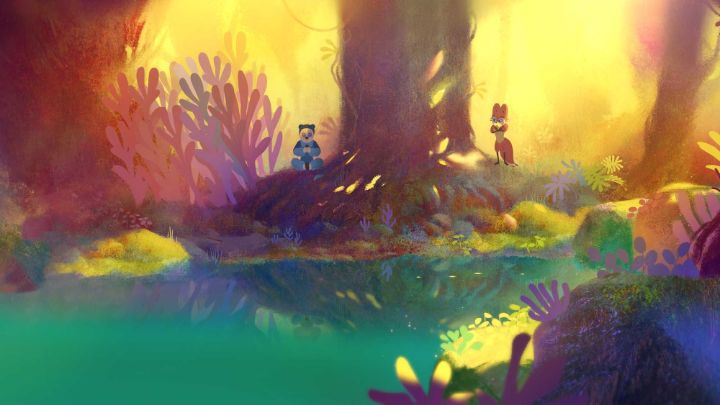

The 2013 animated film "Boy and the World" was a revelation. It wasn't perfect, but it was a beautiful and wholly original movie. Director Ale Abreu didn't release a follow-up until 2022 with "Perlimps," which was one of my anticipated features for the Ottawa International Animation Festival that year. While it retains some of the charms that define Abreu's style, it also shows a lot more weaknesses, particularly with story.It opens with a beautiful introduction of nature and the magic of the forest, which has since come under attack by invading Giants. We then see two different "agents," the fox-wolf character Clae, and the bear-lion character Bruo. Each represents a different rival kingdom (the kingdom of the Sun and the Moon, respectively), and each is on an important secret mission: to find and save the Perlimps. They come across each other, and immediately don't trust each other, but after realizing they have the same goal, they reluctantly work with each other and they search for clues in the forest. The two leads are odd characters. Despite acting like spies, knights or soldiers, they look, sound and act like 8-year-olds. With each other, they brag about how their kingdom is better than the other, and how their strength or speed or senses or tools make them better than each other. They each look like Cirque-du-Soleil actors in costume and make-up rather than proper animals. There's a reason for all of this, leading to a big reveal ending that nearly saves the movie, not unlike what "Boy and the World" had. But that doesn't change the story, or lack thereof, that makes up 90% of the movie. It's cute to watch two children try to prove themselves better than the other for five minutes, but it gets boring fast when that lasts over an hour. One might hope that the Perlimps, the central thing of the movie that gets mentioned at least once a minute, would have some significance. But it doesn't. We never learn exactly what they are: are they fireflies or bugs? Fish or stars? Fairies or some unindenifiable form of magic? Why do we want to find them? Nothing is answered, they are ultimately never found, and the story doesn't care.  In it's favour, the movie looks beautiful at times, with vibrant use of colour and a pastel-like texture. In some more abstract scenes, it's wonderous. But at the same time, the two lead characters we spend so much time with look bizarre and (arguably) ugly. Most of the movie is spent just watching these two walk and talk with each other. Not only is this a case where the idea could have been reduced to a short film; the finished feature-film could be cut down to an efficient 10 minutes of the best content, with nothing of value lost.Ale Abreu is an excellent artist, and clearly has a fondness for themes of childhood innocence and how it explores the real world. His sense for endings are exciting. But he seems to be a rather poor writer, and without an exceptionally strong visual design to prop it up, "Perlimps" fails to keep the viewers attention.
- "Ani" More reviews can be found at : https://2danicritic.github.io/ Previous review: review_Perfect_Blue Next review: review_Persepolis